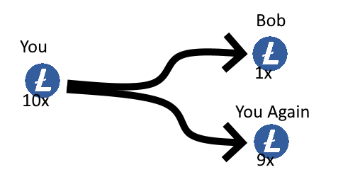
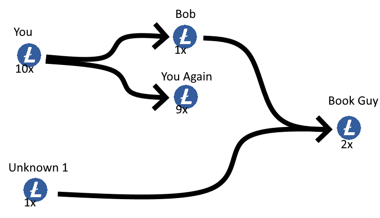
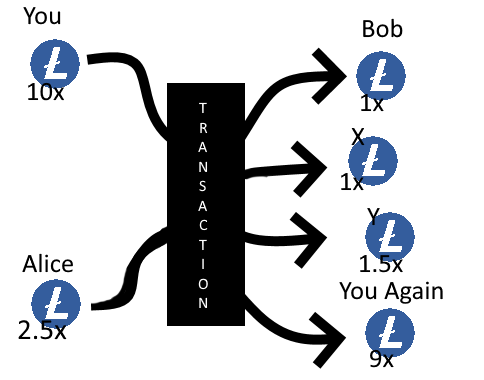
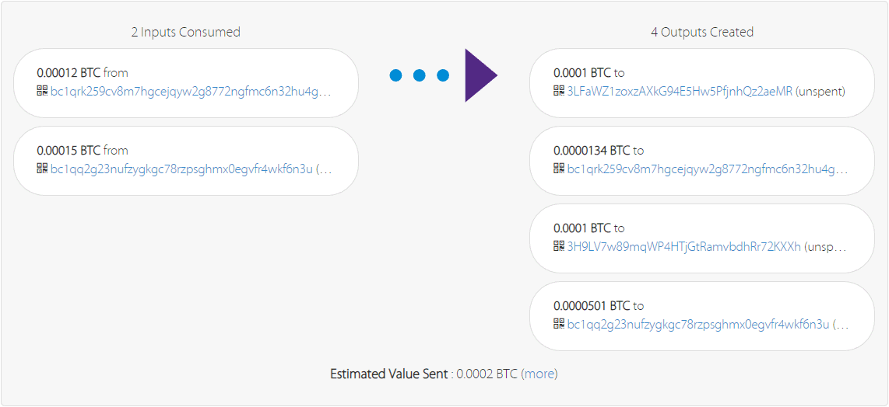

Bringing Obfuscation to the Bitcoin Blockchain
Bitcoin and Litecoin transactions are considered 'anonymous' because they don't require any identification. However, once a Bitcoin address is revealed, all associated transactions become transparent. This article explains how the Unspent Transaction Output (UTXO) model is used by both cryptocurrencies to track historical amounts of data, and how blockchain analysis can be used to identify the parties involved in a transaction. Additionally, the article explores obfuscation techniques that can make it more difficult for outsiders to trace transactions on the blockchain.
Bitcoin, The Unregulated Casino.
Not sure if Elon Musk's pump and dump of Bitcoin is technically illegal or securities fraud.
— Arpit Gupta (@arpitrage) May 17, 2021
But it is super sketchy, and someone supposedly revolutionizing our energy use and innovating on space travel should be doing better than this. pic.twitter.com/FTaKfaZNLb
The Bitcoin protocol has been so popular that it reached mainstream interest. Unfortunately, most of those people aren't here to benefit from the peer-to-peer pseudo-anonymouse cash system, but instead, attempt to profit from its volatile value and unregulated trading habits which are often associated with 'pump and dumps' or other shady schemes in an attempt to make a quick buck.
This popularity resulted in a high increase in transactions, but the Bitcoin Blockchain is only capable of processing 1MB of transaction data in every block, which is mined roughly every 10 minutes depending on the network. Transactions can be broadcasted with a fee as miners favor the most rewarding transactions, resulting in high fees due to the constant need for transactions being broadcasted by its users.
An average transaction is about 224 bytes meaning a 1 MB block (1.048.576 bytes) can have about 4681-ish average transactions, which will be processed in an average of about 10 minutes, or about 7.8 transactions every second. The scarcity of the block size is the reason why transaction fees have become so high over the last few years. At the time of writing the transaction fee is about 102 Satoshis/bytes, whereas back in the good old days I could get picked up for as little as 3-4 Satoshis per byte. These fees have changed from a mere 0.02$ to 0.65$ on average. On a bad day, you might find yourself paying up multiple (tens) of dollars to get picked up by a miner.
Say Hello to Litecoin
The Bitcoin community has come up with some interesting technologies to cope with this scalability problem. Some of these solutions were SegWit, Taproot, and the Lightning Network. However, my 'solution' to deal with this problem is to just use another blockchain. I chose the Litecoin project, it is one of the first Bitcoin forks and it seems to have some nice adoption in the communities. For now, I will just hold onto Bitcoins as means of value and use Litecoins as an intermediate for transacting money.
The Actual Problem
Okay, with that out of the way it is time to face the real problem. Throughout this research, I will mix both Bitcoin and Litecoin as they are based on the same code base, and share the same problem. The main difference is that Litecoins aren't Bitcoins as Litecoins are being transacted on the Litecoin blockchain. The problems I face with pseudo-anonymity remain the same as blockchain technology is fundamentally the same on both chains.
The actual problem I face has to do with how Bitcoin works as peer-to-peer cash. Everything is transparent as it is publicly registered on the blockchain. The reason this is still 'anonymous' is that no KYC or other types of identification are required to start using the Bitcoin protocol. All it takes is some cryptography to generate a public key (address) and private key, and you are ready to receive and create Bitcoin transactions without any questions asked.
Everything is anonymous until you reveal your Bitcoin address. In other words, if you send or receive funds, the party you transact with will become aware of your address and can look everything up on the blockchain to see your historical data, and might even continue to monitor your addresses for new data. (e.g. to see how or when you send funds around).
Transactions in a nutshell
Bitcoin and Litecoin both use the Unspent Transaction Output (UTXO) model which uses 'inputs' and 'outputs' to keep track of historical amounts of data. The idea is that one address can obtain multiple outputs with a certain amount inside of them. These outputs can only be spent once, which is why a 'return address' is a thing.
Let's say you own 10 Bitcoins, and you want to send Bob 1 Bitcoin. To do so, you will send 1 Bitcoin to Bob and the remaining 9 will be sent back to yourself, as you must consume all value of the given output. You and Bob now own each a new unique output containing 9 Bitcoins and 1 Bitcoin respectively. The 10 Bitcoins output used as input for the transaction has now been marked as 'spent' and can no longer be used in further transactions. (unless you do a double spending attack).
Blockchain Analaysis
The above image illustrates the coin flow of the average transactions, like the one mentioned above, where two parties transact Litecoins. It is good practice to create a new address and use it as the return address used to confuse anyone looking into the transaction with no context. For example, an outsider won't be able to differentiate the 'return address' and the receiver, however, one might guess a transaction of either 1 Litecoin or 9 Litecoins was done, and the remainder is in possession of the previous owner under a new address.
Just looking at the single transaction can only result in an assumption as, none, one, or two addresses could be owned by the sender. To have a more accurate result we should look at more transaction data and perform a technique known as 'UTXO consolidation analysis'.
The idea of consolidation analysis is that, if you do not have the required amount in one output, you will need to consume another output. For example, let's say Bob now has 1 Litecoin and wants to send 2 Litecoins to his online book shop. To do so, Bob can use the 1 Litecoin output he already owns, but he would need another output to cover up for the missing 1 Litecoin.
Let's assume Bob informed us about the new book he wanted to purchase online for 2 Litecoins. By looking at the coin flow of the new transaction we can see Bob used our 1 Litecoin and 1 other Litecoin from an unknown address (named Unknown 1). We can now assume that Bob was already in possession of 1 Litecoin prior to obtaining the 1 Litcoin we send and we can now perform analysis to see where Bob's previous 1 Litecoin came from. (Further analysis of Bob's Litecoins is not possible as all Litecoins were spent to purchase the book and we are left with a dead end.)
Obfuscating Coin Flow
Bob might not worry about his recent purchase in the bookstore, however, he might not want anyone to know how many Litecoins he has in his possession. Bob has his reason, don't question Bob's reasons. Bob says normal people don't yell around how much money they have in their (traditional) banks, Bob also likes to be humble, but unfortunately, the Blockchain was not made that way.
For Bob to hide his historical Blockchain transaction data he will make use of so-called mixers. The idea of mixers is that your coins are mixed together with other participants, and after some time you (hopefully) get coins back but with randomized historical transactions to confuse blockchain analysis.
Unfortunately, Bob, like many others, has some serious trust issues. Bob is not going to send money to an unknown online platform in the hope he gets his money back. The whole Blockchain system was made to be trustless as multi-signature transactions are a thing. This is why Bob stumbled upon a technology called 'CoinJoin', a zero-trust, 'coin-mixing' technology that obfuscates the coin flow and might even reduce the size of the transactions.
What is CoinJoin
The original CoinJoin concept was brought to light by user 'gmaxwell' on the Bitcointalk forums. The idea is a traditional transaction of one-to-one is replaced by multiple to multiple. Let's take the previous example where only you were transacting money and add a second person, Alice to the transaction. Alice said she was in need to send 1 Litecoin from her address 'X', to another address 'Y'.
We will go back in time and instead of sending Bob 1 Litecoin in a one-on-one transaction, we will do a multi-sig transaction. You will send your 1 out of 10 Litecoins to Bob but at the same time Alice will send her 1 out of 2.5 Litecoins to an address she specified as 'X'. Alice does not need to trust you as you only own 1 (out of 2) keys to complete the transaction, therefore, Alice will obtain the partially signed transaction, and (optionally) decodes the transaction to verify where her money is being sent to. When she is satisfied she signs the transaction and she is the last one to sign, she will broadcast it to the Litecoin network.
The above image illustrated the multisigned transaction in which both You and Alice participated to send 1 Litecoin to Bob, 1 Litecoin to X, 1.5 Litecoin to Alice's return, and 9 Litecoin to your return. Even without labels, it is obvious to see both return addresses, however, the 1 Litecoin transactions to either Bob or X are indistinguishable if no label was applied. By making outputs with an equal amount (1 Litecoin in this case) it is no longer possible to see who owns what.
Did Alice send 1 Litecoin to another person? or does Alice own 1 X? And for the third party that has no knowledge about Bob, who send that 1 Litecoin to who?
Dissecting a Real Example
The below image shows a real example broadcasted on the Bitcoin blockchain. Two addresses owning 0.00012 BTC and 0.00015 BTC have transacted to 4 outputs. Two of those outputs are equal (0.0001 BTC) and the two other outputs are unique as they are most likely the return addresses of both participants.
Interesting to note, the sum doesn't add up.
Total input (0.0001200 + 0.0001500): 0.0001700 Total output (0.0001134 + 0.0001501): 0.0001635
The first thing we notice is the total output not matching the total input. Unlike our theoretical example, the difference between the total input and total output is there as they are left for the transaction fees.
0.0001000 + 0.0000134 = 0.0001134 0.0001000 + 0.0000501 = 0.0001501
Additionally, we can see the outputs don't add up either. We can assume the 2 addresses that participated in the transaction get 2 outputs each, matching the total of 4 outputs. If we take a 0.0001 address and add it up with a return address we see a noticeable difference.
The owner sending 0.0001500 is now assumed to own 0.0001501, we just do not know which one of the 0.0001000 outputs is owned by him. The owner sending 0.0001200 is now assumed to own 0.0001134, which is way less. Most likely because 0.0001200 is being used to pay the network fees, and second, is paying a (very low) fee of 0.0000001 to 0.0001500 for mixing the assets.
Building a CoinJoin
Now that we have a full understanding of what to do, we can jump right into our IDE and start building a solution that builds on this idea. As you might already know, I am a big fan of C# and will therefore be using C# in combination with the popular NBitcoin library.
Fast forward I created this MultiSigTransaction GitHub repo that contains some helper classes for adding, removing, and updating so-called 'Participants' that can be assigned to a 'Group' created by the 'GroupManager'.
With the use of those helper classes, we can create a multi-signature transaction with ease using the code below.
// Create a group that agrees on 600 satoshi output GroupManager GroupManager = new GroupManager(); decimal amount = 600; Group testGroup = GroupManager.CreateNewGroup("test", amount); // Add 2 participants Participant Alice = new Participant("Alice"); testGroup.AddParticipant(Alice); Participant Bob = new Participant("Bob"); testGroup.AddParticipant(Bob); // Alice configuration Alice.UpdateMainAddress("bc1qrk259cv8m7hgcejqyw2g8772ngfmc6n32hu4gx"); // Alice send addr Alice.UpdateReturnAddress("bc1qrk259cv8m7hgcejqyw2g8772ngfmc6n32hu4gx"); // Alice recv addr (same as main for now) Alice.AddOutputAddress("3LFaWZ1zoxzAXkG94E5Hw5PfjnhQz2aeMR", amount); // Alice sends 600 sats to target bool readyA = Alice.Ready(true); if (!readyA) { Console.WriteLine("Alice failed getting ready"); return; } // Bob configuration Bob.UpdateReturnAddress("bc1qq2g23nufzygkgc78rzpsghmx0egvfr4wkf6n3u"); Bob.UpdateMainAddress("bc1qq2g23nufzygkgc78rzpsghmx0egvfr4wkf6n3u"); Bob.AddOutputAddress("3H9LV7w89mqWP4HTjGtRamvbdhRr72KXXh", amount); bool readyB = Bob.Ready(true); if (!readyB) { Console.WriteLine("Bob failed getting ready"); return; } bool canStart = testGroup.CanMultiSig(); if (!canStart) { Console.WriteLine("Something wrong on group signing!"); return; } // start mult-ish testGroup.StartMiltiSig(); bool isFinished = testGroup.IsFinishedSigning(); if(!isFinished) { Console.WriteLine("Failed finalising the group"); } // The current raw (unsigned) transaction string rawTranscationHex = testGroup.CurrentTransaction.ToHex(); Console.WriteLine(testGroup.DebugLog); Console.WriteLine("Done!");
I won't go into too many details here as this is a lot of C# specific stuff, but after this snippet executes, the rawTranscationHex variable should give us this:
0100000002a7ab1a4cd06fed32f231936cb205caa8a323ffdb3dfe8682ab3a5e33e218a88e0100000000ffffffffa7ab1a4cd06fed32f231936cb205caa8a323ffdb3dfe8682ab3a5e33e218a88e0300000000ffffffff03580200000000000017a914cb9ac6d00534e4595960b77259678296c9094b1887580200000000000017a914a984323e2d9b262fda7694cdeddcef3ac3ce204c87b00e0000000000001600140290a8cf8911116463c71883045f667e50c48eae00000000
Seems pretty boring at first, but we can decode this using the decoderawtransaction command in the Bitcoin Core wallet to get the following JSON output
{
"txid": "b5e757cb0a310cce731f184388cac1cf6f82f032067bcda7e108391810e05a71",
"hash": "b5e757cb0a310cce731f184388cac1cf6f82f032067bcda7e108391810e05a71",
"version": 1,
"size": 187,
"vsize": 187,
"weight": 748,
"locktime": 0,
"vin": [
{
"txid": "8ea818e2335e3aab8286fe3ddbff23a3a8ca05b26c9331f232ed6fd04c1aaba7",
"vout": 1,
"scriptSig": {
"asm": "",
"hex": ""
},
"sequence": 4294967295
},
{
"txid": "8ea818e2335e3aab8286fe3ddbff23a3a8ca05b26c9331f232ed6fd04c1aaba7",
"vout": 3,
"scriptSig": {
"asm": "",
"hex": ""
},
"sequence": 4294967295
}
],
"vout": [
{
"value": 0.00000600,
"n": 0,
"scriptPubKey": {
"asm": "OP_HASH160 cb9ac6d00534e4595960b77259678296c9094b18 OP_EQUAL",
"hex": "a914cb9ac6d00534e4595960b77259678296c9094b1887",
"address": "3LFaWZ1zoxzAXkG94E5Hw5PfjnhQz2aeMR",
"type": "scripthash"
}
},
{
"value": 0.00000600,
"n": 1,
"scriptPubKey": {
"asm": "OP_HASH160 a984323e2d9b262fda7694cdeddcef3ac3ce204c OP_EQUAL",
"hex": "a914a984323e2d9b262fda7694cdeddcef3ac3ce204c87",
"address": "3H9LV7w89mqWP4HTjGtRamvbdhRr72KXXh",
"type": "scripthash"
}
},
{
"value": 0.00003760,
"n": 2,
"scriptPubKey": {
"asm": "0 0290a8cf8911116463c71883045f667e50c48eae",
"hex": "00140290a8cf8911116463c71883045f667e50c48eae",
"address": "bc1qq2g23nufzygkgc78rzpsghmx0egvfr4wkf6n3u",
"type": "witness_v0_keyhash"
}
}
]
}
We can see the highlighted sections showing the amount of Bitcoins being sent to their corresponding output addresses. To complete the transaction each participant needs to sign the transaction. I do this using the Bitcoin Core command walletpassphrase "mypassword" 60 to unlock the wallet followed by signrawtransactionwithwallet to sign the transaction.
In this case, I own both inputs and I can sign the transaction all by myself, the result is below.
01000000000102a7ab1a4cd06fed32f231936cb205caa8a323ffdb3dfe8682ab3a5e33e218a88e0100000000ffffffffa7ab1a4cd06fed32f231936cb205caa8a323ffdb3dfe8682ab3a5e33e218a88e0300000000ffffffff03580200000000000017a914cb9ac6d00534e4595960b77259678296c9094b1887580200000000000017a914a984323e2d9b262fda7694cdeddcef3ac3ce204c87b00e0000000000001600140290a8cf8911116463c71883045f667e50c48eae02473044022074c999c6a4f758d4c841507feaa91014066e2dc6177e1c11362573d5019d272402203646e1e781b12912a017c81fc349bf4287789a739f14f2aa4bf5ce3064442153012102fbded889a1f26d5b362977ddeb508c7a586cdaca8893b82ca4b9be67cf7da9e002473044022023ce79f494e6e78a67e3c47269da0db414381e8b8b81bf403ad74046c24c285e022023b02c0405015e6f8b2d07dfde0125b3e8eea40f15b4621f193cb38bbc52727a012103c48926b53c84327780f935c574525906e6de0c87981177d5fa7a953e0e0c248e00000000
These bytes might look meaningless but this transaction has been signed and anyone, including you, can take the signed transaction and broadcast it on the network. (e.g. this online tx pusher can broadcast any signed transacting for you). Feel free to do so as I made this transaction for educational purposes. In other words, the transaction fees are set very low so it won't be picked up by the network and will be either 'stuck' in the mempool or waiting to be broadcasted again.
In a realistic secanrio, the transaction would first have been created with reasonable transactions fees and would then be broadcasted by the last user that signs it. From there, the network will pick it up in any of the new mined blocks and the transactions will be completed.
Conclusion
We have addressed how pseudo-anonymity does not fit the need of day-to-day users and looked into multi-signature transactions to have a joined group of participants to transact money. Each participant has to agree on sending the exact same amount to keep the transaction obscure. This type of transaction is often referred to as a 'CoinJoin' and is proven to be effective as long as the participants follow good practices (e.g. no coin consolidation) in order to keep their coins obscured.
In a realistic scenario, the transaction would first have been created with reasonable transaction fees and would then be broadcasted by the last user that signs it. From there, the network will pick it up in any of the newly mined blocks and the transactions will be completed.
With that being said, it looks like the only challenge left is to somehow find other people who want to participate in such a joint transaction and follow a certain set of good practices to not weaken the obfuscated transaction. A challenge left to be solved another time.